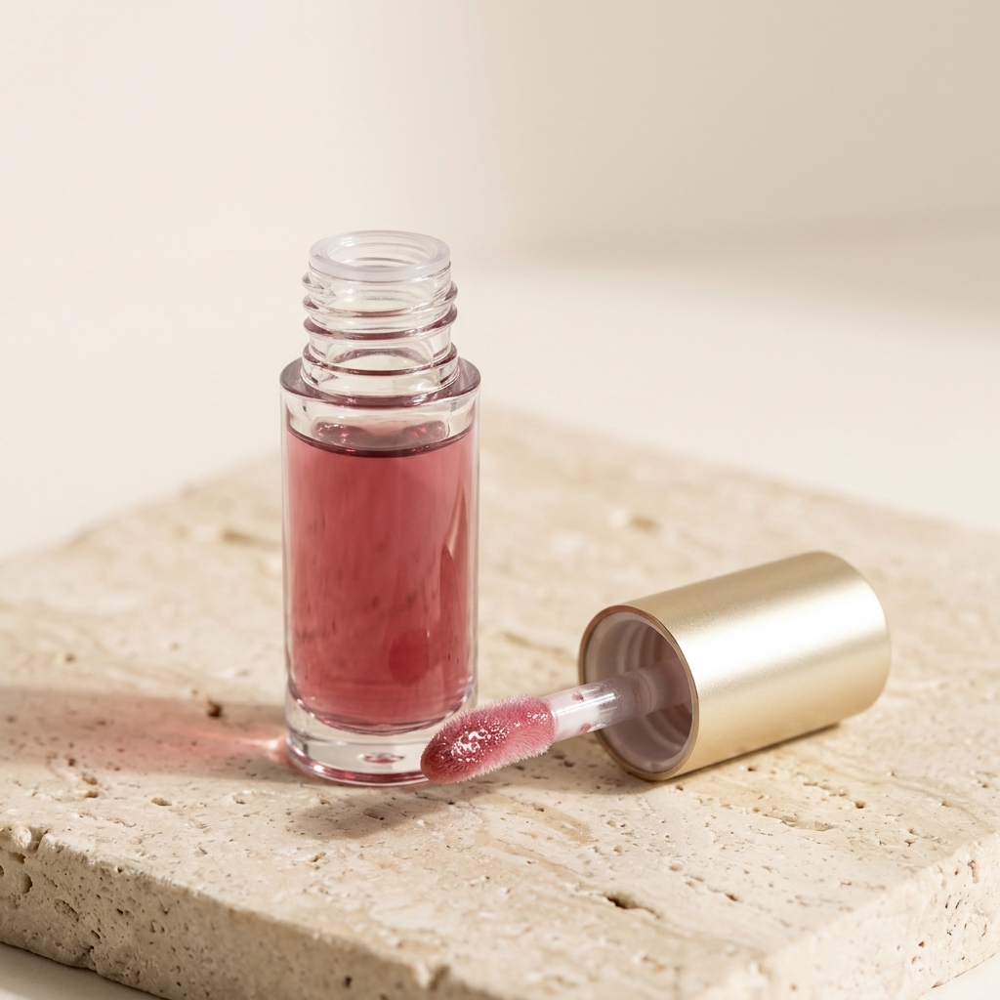

Pure Choice Salicylic Acid %2 Gözenek Arındırıcı Tonik içerik analizi
Cilt Bakımı · Tonik · ₺₺
100/100 · Sağlıklı & Temiz
Kaynağı Kontrol EtHamilelikte dikkatCruelty-freeParaben içermezParfüm / koku alerjeni yokCilt dostu aktifler: Propandiol (Bitkisel Nem Taşıyıcı) & Niasinamid (B3 Vitamini)
Vegan mı? Kaynağı Kontrol Et. Allantoin bileşenleri hem bitkisel hem hayvansal üretilebilir; ambalajda Vegan logosu arayın.
Sağlıklı mı? Genel olarak güvenli, cilt bariyerini koruyan temiz bir formüle sahip.
Salisilik Asit (BHA), Centella ve Niasinamid ile siyah nokta ve akne oluşumunu azaltmaya destek olan vegan arındırıcı tonik.
Cilt tipi: En uygun cilt tipleri: Kuru, Yağlı / Akne, Hassas, Karma, Normal
Marka: Pure Choice — %100 Vegan & Temiz İçerik, cruelty-free.
Uygulamada detaylı analizi aç →Satın al
Amazon.com.tr Trendyol HepsiburadaDikkat edilmesi gerekenler
- Hamilelikte doktora danışın: Salicylic Acid
- AB'de oran sınırı olan madde: Salicylic Acid, Sodium Benzoate
- Bitkisel de hayvansal da olabilir: Allantoin
İçindekiler (INCI) — 9 bileşen
- Aqua — Saf Su (Güvenli)
- Propanediol — Propandiol (Bitkisel Nem Taşıyıcı) (Güvenli)
- Salicylic Acid — Salisilik Asit (BHA) (Güvenli)
- Niacinamide — Niasinamid (B3 Vitamini) (Güvenli)
- Centella Asiatica Extract — Centella (Cica) Özü (Güvenli)
- Allantoin (Güvenli)
- Panthenol — Pantenol (Provitamin B5) (Güvenli)
- Citric Acid — Sitrik Asit (pH Dengeleyici) (Güvenli)
- Sodium Benzoate — Sodyum Benzoat (Güvenli)
Bileşen listesi bilgilendirme amaçlıdır ve üretici formülü zamanla değişebilir; satın almadan önce ambalajdaki güncel listeyi kontrol edin. Bu sayfa tıbbi tavsiye değildir.